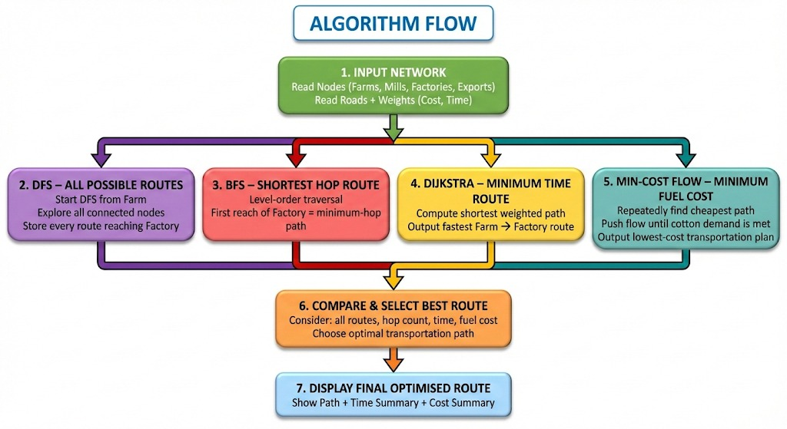

• Collaboration connects my focus on sector Industries, Infrastructure & Logistics Optimization with my partner Akshata's focus in the field of Traffic & Transport analysis.
Cotton Supply Chain Optimisation (Graph + Shortest Path + Min-Cost Flow)
Vishalanagri is India’s largest cotton textile hub. Cotton is grown in farms around the Purna river and transported to 12 major ginning and textile clusters. Design the most cost-efficient and time-efficient transportation network from farms → ginning mills → textile factories → export terminals.
Input: A road graph where edge-weights encode fuel cost, expected delays, congestion probabilities, and seasonal blockages. Output: Optimised routing plan and flow assignment minimizing total transportation cost while meeting delivery time constraints and capacity limits.
Approach: Model the network as a directed graph. Use single-source shortest path algorithms (Dijkstra or Bellman-Ford) for route discovery and Min-Cost Max-Flow to assign cotton shipments across multiple routes under capacity and cost constraints. Preprocess with all-pairs analyses (Floyd-Warshall) where required, and dynamically update edge weights for real-time congestion or hazard updates.
• Dijkstra – Minimum-cost single-source routing
• Bellman-Ford – Handles negative/hazard-adjusted weights
• Floyd-Warshall – All-pairs baseline mapping
• Min Cost Max Flow – Optimal distribution of cotton shipments
• Dijkstra: Time – O(V²) (dense) or O(E log V) with binary heap; Space – O(V)
• Bellman-Ford: Time – O(V × E); Space – O(V) — useful when negative adjustments exist
• Floyd-Warshall: Time – O(V³); Space – O(V²) — for dense all-pairs insights
• Min Cost Max Flow: Time – typically O(V × E²) depending on implementation (SPFA or Dijkstra potentials); Space – O(V + E)
• Smooth routing & reduced congestion
• Lower emissions through optimized paths
• Industry cost savings
• Stable cotton supply chain
• SDG 9 – Industry, Innovation & Infrastructure
• SDG 11 – Sustainable Cities
• SDG 12 – Efficient Resource Management
• SDG 13 – Climate Action